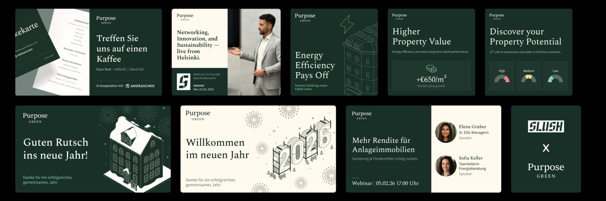
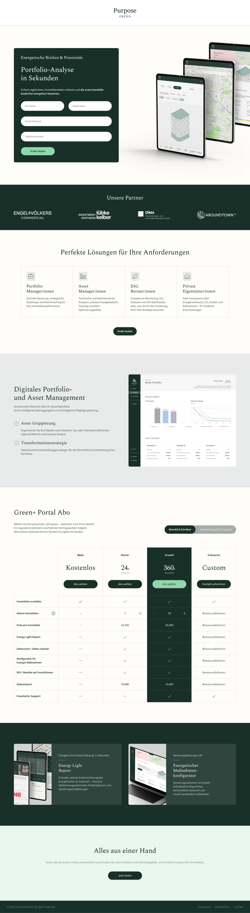
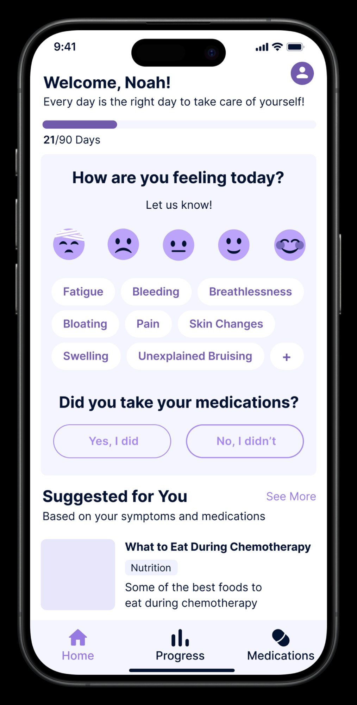
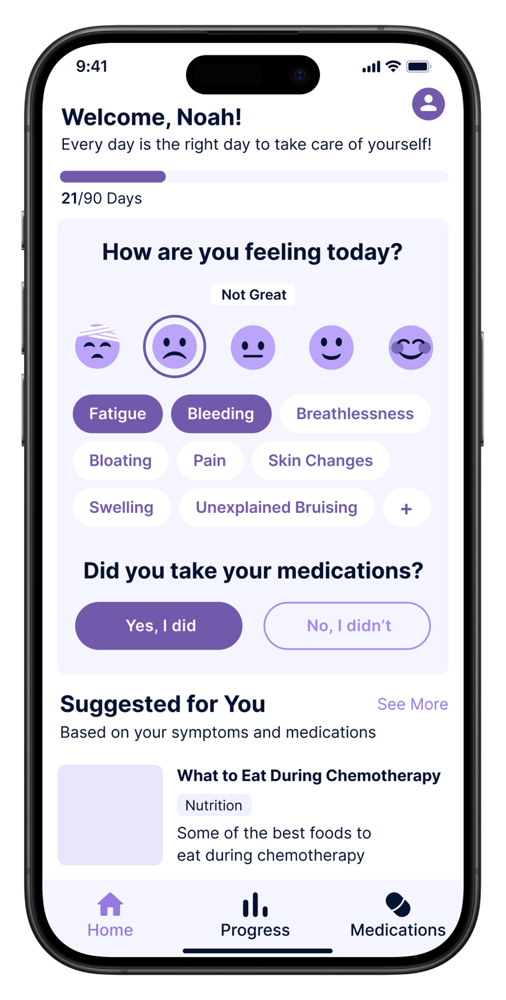
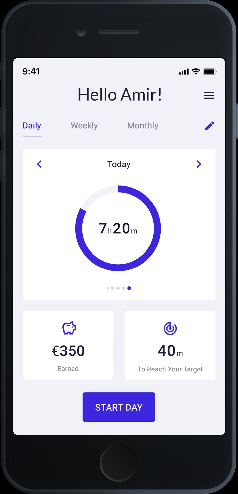
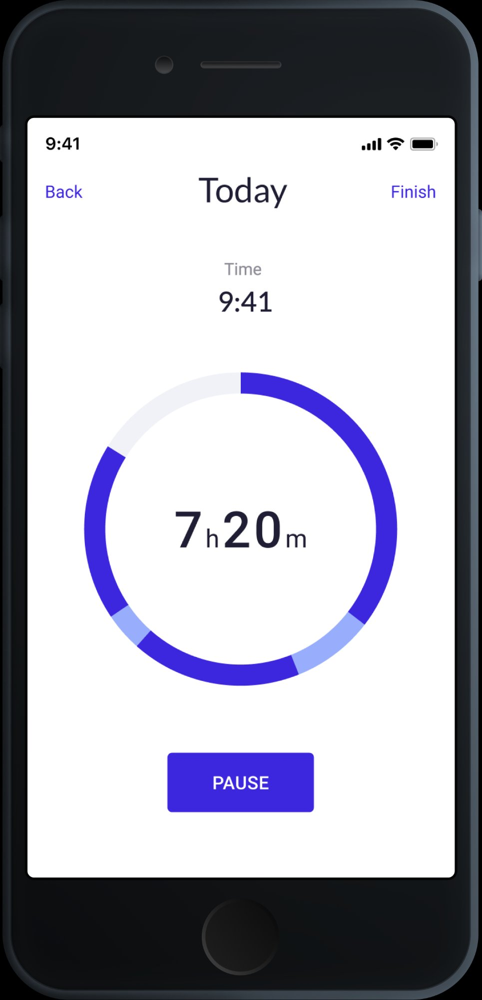
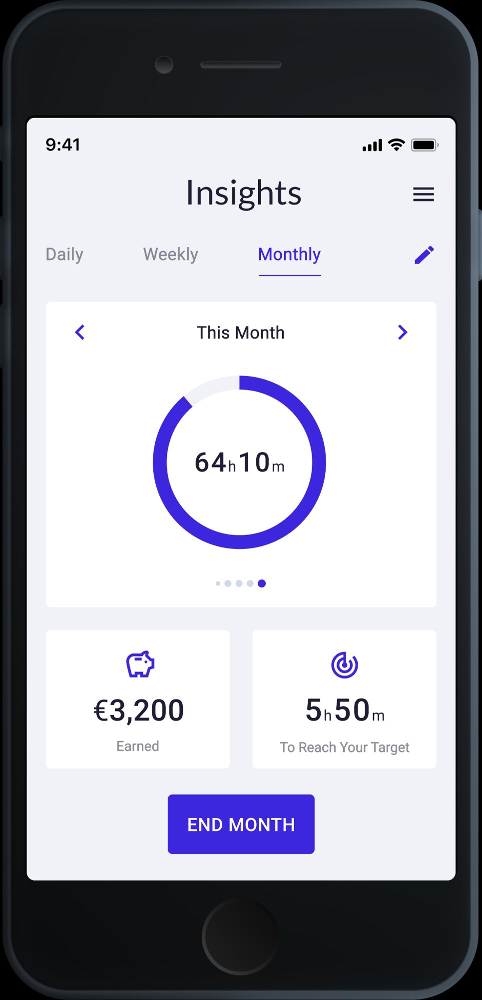

I design interfaces that balance clarity, usability, and strong visual identity — integrating AI to move faster and working closely with developers to ensure the final result matches the design.
View WorkSelected UX/UI projects — navigation redesign, data-driven page structures, campaign landing pages, and A/B tested experiences
Mobile app for oncology patients — daily check-ins, symptom tracking, and care team communication
Time tracking app designed from scratch — built for freelancers and contractors who need to log hours fast and report clearly
Designed and optimized Websites and Landing Pages, applying UI/UX Principles and improving layouts, components, and user flows based on User Behavior Analysis and Performance Data.
Led Website and Product Experience Improvements, designing scalable components, improving page structure and usability to ensure clarity, consistency, and high-quality digital interactions.
Designing and Redesigning App Interfaces, including creating Prototypes for a new app in preparation for its launch.
Led the Design Team, overseeing all design materials (UX/UI, Print, Digital, Social Media) and making final decisions on their execution.
Created Design Systems and Apps from scratch, delivering effective and consistent UX/UI Solutions across digital products in line with Expertlead's branding.
Used Figma and Adobe Creative Suite to design Interfaces, Prototypes, and a wide range of Marketing Assets.
Designing Printed Material such as Brochures, Leaflets, Roll-Up Banners, Table Signages, ID Badges and Lanyards.
Designing Digital Material such as Digital Interactive Brochures, Social Media Banners and Video Editing.
Berlin-based UX/UI and web designer. I studied at the Academy of Fine Arts and have spent 4+ years designing digital products in Berlin startups and scale-ups. I work across product design, web, and visual — with a strong eye for UI and a mindset for systems.
I ask why before I ask what. I work closely with both product and marketing teams, challenge assumptions, and follow every project from first wireframe to live implementation. I collaborate directly with developers to make sure the design holds up in the real world.
AI is part of how I think, not just how I work. I choose tools based on what each does best — Claude for layout logic and content structure, ChatGPT for rapid ideation, Lovable for structural prototyping, Gemini for research and synthesis. I stay ahead of what's emerging, test new tools early, and integrate them only when they sharpen the outcome. The standard is always the same: better design decisions, faster.
Open to full-time roles, freelance projects, and interesting collaborations.
UX/UI and web design projects — navigation systems, page redesigns, campaign landing pages, and A/B tested experiences for a B2B sustainability platform.
Oversees a portfolio of 30+ commercial and residential properties across Germany. Answers to investors on ESG performance and long-term asset value.
Understand portfolio-wide risk at a glance. Find service providers he can trust. Make renovation investment decisions backed by data, not guesswork.
Scans before he reads. Arrives via LinkedIn or referral. Loses trust at visual noise or unclear hierarchy. Responds to concrete numbers and social proof.
Manages individual asset performance for a family office with mixed-use properties. Balances renovation budgets, tenant relations, and compliance requirements.
Quickly assess which properties need attention. Get actionable recommendations she can take to ownership. Stay compliant without needing to become an energy expert.
Detail-oriented but time-poor. Trusts structured, visual information over walls of text. Will drop off if the next step is not obvious.
Claude for layout reasoning and content structure, ChatGPT for fast copy alternatives, Lovable for structural prototyping, Gemini for research. Each tool where it makes sense — always in service of a better design decision.
Replaced a basic flat navbar with a structured mega menu — icons, product banners, and clearer user paths.
Transformed a monotonous project list into a filterable, outcome-led case study system with visual data cards and CMS automation.
Full landing page built from scratch for a LinkedIn B2B campaign — structured for a pre-qualified audience.
Beyond UX and web, I also created social media assets, campaign visuals, and marketing materials for Purpose Green — expo banners, LinkedIn templates, "Meet me at" cards, and social posts.

Design at Purpose Green wasn't just about shipping screens — it was about making the whole team faster. I built infrastructure that lets marketing move independently, keeps Figma organised for cross-functional work, and removes recurring bottlenecks from the design process.
Built a full library of pre-designed landing page sections in Figma — hero variations, content blocks, data highlights, CTA modules, testimonials, and footers. Marketing can now assemble a campaign page by plugging in copy and swapping images, without starting from scratch or waiting for a designer.
Designed a complete social media template system inside Figma Buzz (still in beta) — 1080×1080 for LinkedIn posts, 1080×1350 for Instagram. Fully editable by non-designers: plug in headline, subheadline, CTA, swap the visual. No design knowledge needed, no approval delays for standard posts.
Reorganised the entire website Figma file by creating a dedicated "Current Website" page — a live, accurate overview of every page that exists on the site today. Eliminated confusion between old designs, new designs, and what's actually live. Faster for developers, faster for anyone joining the project.
The marketing team went from needing a designer for every banner and landing page, to operating independently on standard formats. My time shifted from repeating the same executions to designing new things that actually move the needle.
Redesigning a flat, text-heavy reference list into a filterable, outcome-led card system — with a CMS architecture that auto-generates every visual element from data.
Hotjar scroll maps told a clear story: 70–75% of users reached the first reference entry. Below that, engagement collapsed. The content wasn't wrong — the format was. A blog-style layout designed for editorial content was being used as a proof page for B2B decision-makers. Those are two completely different reading behaviours.
My role covered the full redesign: information architecture, the card system, the energy bar component, and the CMS automation layer. I also worked directly with the Webflow developer to define how every visual element maps to a CMS field — so the system generates itself from data, with zero manual design work per entry.
Restructured the page around how asset managers actually scan — energy class change visible before clicking, not after reading.
Defined the full field mapping with the developer — energy class, CO₂, cost, status all render automatically from CMS input.
Designed a category filter (Wohnen / Gewerbe) and status badges that update automatically from CMS option values.
The target user — a portfolio manager or asset manager — arrives at the References page with one question: "Has Purpose Green done this before, and did it work?" The design is built to answer that in under 10 seconds, without requiring them to read a single paragraph.
Filter chips (Wohnen / Gewerbe) at the top let users immediately narrow to relevant projects. One tap, no cognitive load.
The energy bar (e.g. G → B) is the first visual element on every card. The transformation is readable in under 2 seconds — no numbers needed.
CO₂ savings, renovation cost, and surface area appear in a consistent 2×2 data grid. Same layout every card — scannable, comparable, no reading required.
Status badges (Abgeschlossen / In Planung / Bewertet) are CMS-driven and visible on the card — so users know before clicking whether a project is a completed reference or a live case.
A full landing page built from scratch for a LinkedIn B2B campaign — designed for a pre-qualified audience and built around one conversion goal.

↕ Scroll to explore the full page
The marketing team provided a first Figma draft with all the required content. It was functional but visually dense — not ready for a paid LinkedIn audience that makes a trust decision in seconds.
After design, I worked directly with the developer to ensure accurate implementation and launched on time. Live within 48 hours of the campaign deadline.
Designing a mobile app home screen for oncology patients — clear, calm, and built to be used daily during active treatment.

Default state
Selected stateKranus Health was building a companion app for oncology patients undergoing active treatment — a context where every interaction has emotional weight. I was brought in as Lead UX/UI Designer to design the home screen from scratch, working alongside the product team and clinical advisors.
The core constraint: patients aged 45–75, many experiencing chemo-related fatigue and cognitive effects. Every tap, every label, every visual decision had to work for someone having a bad day — not just an average one.
The home screen is the most loaded view in the app — it's the first thing a patient sees every morning, and it needs to guide them through a check-in without feeling like a form. Calm, clear, one obvious next step at a time.
Undergoing chemotherapy for colorectal cancer. Living at home, checking in with his care team remotely. Experiences fatigue, occasional brain fog, and fluctuating symptoms day to day.
Complete his daily check-in quickly without it feeling like medical admin. Feel heard by his care team. Know that someone is paying attention to how he's doing.
Low energy on bad days. Can't process complex interfaces. Needs plain language — no clinical jargon. One obvious action at a time, or he won't complete it.
Manages 15–20 remote oncology patients in parallel. Reviews daily check-in data each morning. Needs to spot deterioration early — before it becomes a crisis requiring emergency intervention.
See which patients need attention today at a glance. Trust that incoming data is complete and accurate. Intervene earlier and more efficiently than phone-based follow-up allows.
No time for tools that require training. Incomplete check-ins are worse than none — they create false reassurance. Any friction that stops patients completing the flow directly reduces her ability to do her job.
| Step | What the user does | What they feel | Design response |
|---|---|---|---|
| Opens app | Sees their name, a day counter, one clear question | Tired, wants this to be quick | Warm greeting. "Day 21/90" creates a sense of progress and journey — not just a daily chore. |
| Selects mood | Taps one of 5 facial expression icons | Relieved — no text to write, no scale to interpret | Visual scale, zero reading required. One tap and it's done. |
| Logs symptoms | Taps the symptom chips that apply today | Can actually find the right words — names are familiar | Plain language, not clinical terms. Most common chemo symptoms shown first. |
| Medication confirm | Taps "Yes, I did" or "No, I didn't" | Simple. Clear. Done. | Two large buttons, no ambiguity. Immediate visual feedback on tap. |
| Sees suggested content | Scrolls past a personalised article or tip | Feels supported, not just monitored | "Suggested for You" connects the check-in to something useful — the app gives something back. |
The constraint wasn't "make it simple." It was: make it completable by someone who is exhausted, in pain, and has no patience for confusion. That standard changed every single decision.
5 visual emoji-style options from very unwell to great — no text label needed. Accessible at a glance even when fatigued. One tap captures the most important signal of the day.
Plain language labels (Fatigue, Bloating, Pain) — not clinical terms. Pre-populated with the most common treatment symptoms so patients tap rather than type.
Check-in, medication confirmation, and suggested content visible on one screen — no deep navigation required. The entire routine is completable in under 60 seconds.
Designing a time tracking app for freelancers and contractors from scratch — built to make logging hours as frictionless as possible, while giving users the insights they actually need.

Dashboard
Timer
InsightsExpertlead needed a time tracking tool built specifically for their freelancer network — not a generic app, but something that understood how contractors actually work: multiple clients, hourly billing, monthly reporting. I designed it end-to-end, from research and personas to high-fidelity screens.
The core design challenge: time tracking is perceived as admin. The goal was to remove every possible source of friction — so that logging time felt as natural as checking your phone, not like filling out a form.
I ran the full design process — user research, competitive analysis, information architecture, wireframes, and high-fidelity UI. I also built the component library for the app within the Expertlead design system, ensuring visual consistency across product and web.
Works across 2–3 client projects simultaneously. Bills by the hour and submits monthly reports to Expertlead. Tracking time is a requirement, not a preference — but he resents tools that slow him down.
Start and stop a timer in one tap. Know at the end of the day how many hours he's logged per project. Submit his monthly summary without having to reconstruct it manually.
Zero tolerance for complexity. Forgets to log if the app isn't fast. If setup takes longer than 30 seconds — he won't use it.
Splits her time between two long-term clients with different rate structures. At month-end, she manually reconciles everything — a process she finds painful and error-prone.
See a clear breakdown of hours per client, per week. Identify quickly if she's under or over her agreed hours. Export a clean summary she can send directly to clients.
Doesn't trust data she can't easily verify. If the monthly report looks off — she'll do it manually anyway, making the app useless.
The dashboard shows a single prominent action: start tracking. One tap to open, one tap to confirm the project — and you're live. No form, no required fields, no friction at entry.
The app learns which projects you typically work on at which time of day. The most likely project appears pre-selected — most of the time, zero manual selection needed.
At the end of each working session, a lightweight summary screen shows total hours logged, project breakdown, and a one-tap confirmation. The data is structured before it becomes a report.
Not buried in settings — insights are a core tab. Per-client hours, weekly averages, and a direct comparison against contracted hours. Everything a freelancer needs before submitting their report.
Every screen covers a specific step in the user journey — from first login to end-of-month reporting. No decorative screens — every view has a job.
The Time Tracking App was one part of a broader product role. In parallel, I built the Expertlead design system from scratch — token structures, component libraries, and documentation used across product and marketing. I also designed and continuously improved the company website.